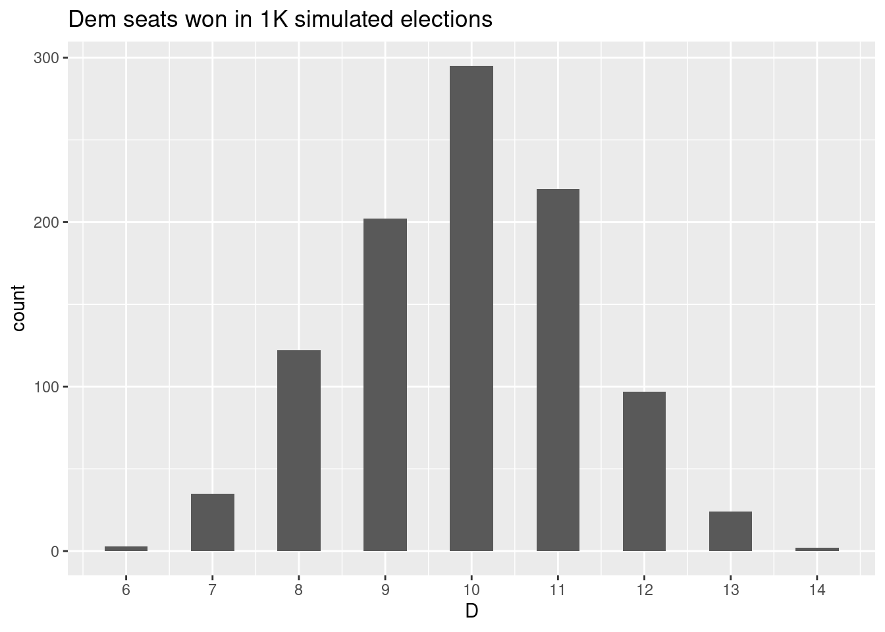
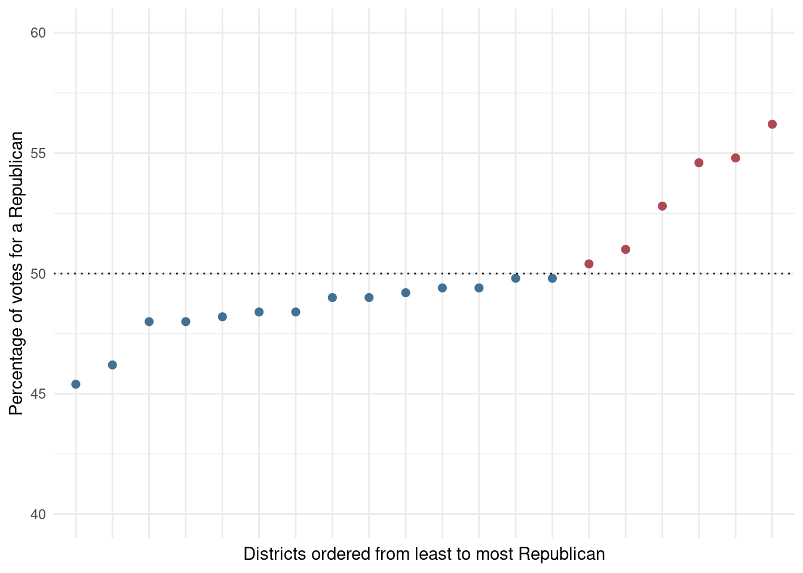
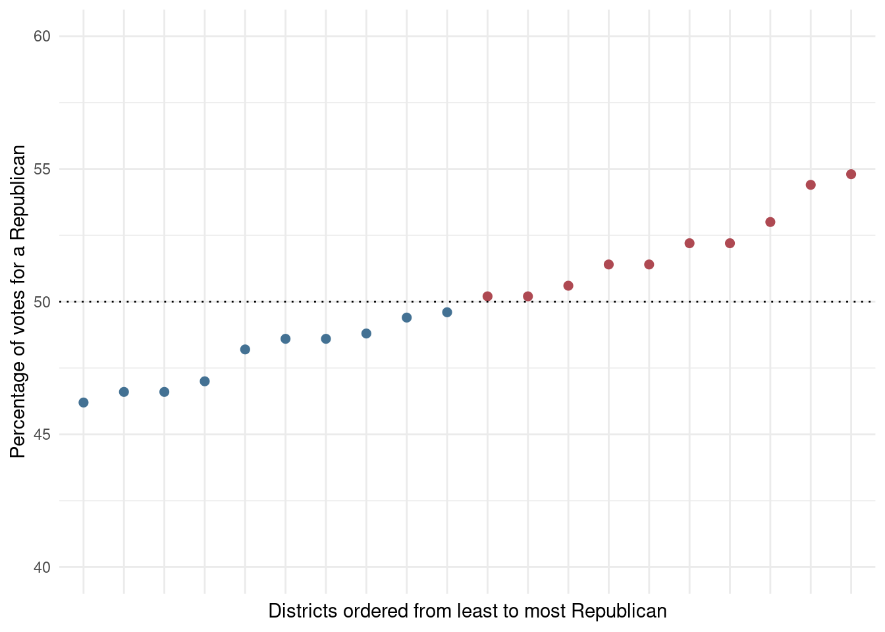

simulate_election <- function(state_pop,
dem_prop = .5,
district_n) {
dems <- state_pop * dem_prop
reps <- state_pop - dems
district_pop <- state_pop / district_n
pop <- sample(c(rep(1, dems), rep(0, reps)), state_pop)
district <- unlist(lapply(1:district_n, function(x) rep(x, district_pop)))
data.frame(party = pop, district = district) %>%
group_by(district) %>%
summarize(D = sum(party)) %>%
mutate(R = district_pop - D,
d = round(D/(D+R)*100, 1),
r = 100 - d,
r = ifelse(r == d, sample(c(49, 51), 1), r),
dwin = ifelse(d > r, 1, 0),
dseats = sum(dwin)) %>%
ungroup()
}A brief note on gerrymandering, and cracking & packing. Specifically, a simple simulation demonstrating how gross partisan asymmetries in the composition of state legislatures can be crafted from statewide populations evenly split between two parties.
Per function below, we designate individuals in a population of N voters as either Republican or Democrat (50-50 split). Then we randomly assign each voter a district.
1 Example #1
We simulate 1,000 election results for a state with a population of 10,000, evenly distributed across 10 legislative districts. Here, a comparison of two of these elections.
set.seed(999)
f1a <- lapply(1:1000, function(x) {simulate_election(state_pop = 10000,
district_n = 10,
dem_prop = .50)}) %>%
bind_rows(.id = 'vote') In the first, per the vote tally below, Democrats won 5/10 seats in the legislature. A reasonable result in a state split 50-50 among Ds and Rs.
f1a %>%
filter(dseats == 5) %>%
slice(1:10) %>%
select(district, dwin, D, R) %>%
mutate(Total = R + D) %>%
janitor::adorn_totals(where = c('row')) %>%
knitr::kable()| district | dwin | D | R | Total |
|---|---|---|---|---|
| 1 | 0 | 497 | 503 | 1000 |
| 2 | 0 | 472 | 528 | 1000 |
| 3 | 1 | 506 | 494 | 1000 |
| 4 | 1 | 508 | 492 | 1000 |
| 5 | 0 | 486 | 514 | 1000 |
| 6 | 1 | 521 | 479 | 1000 |
| 7 | 0 | 499 | 501 | 1000 |
| 8 | 1 | 500 | 500 | 1000 |
| 9 | 0 | 498 | 502 | 1000 |
| 10 | 1 | 513 | 487 | 1000 |
| Total | 5 | 5000 | 5000 | 10000 |
In the second, Democrats won 8/10 seats, despite the statewide 50-50 split. Clearly a preferable outcome for Democrats. How did they do it? Well, election results show that Dems won lots of seats by very slim margins in the simulation – maxing out at only 511 votes in districts 2 and 6. Republicans, on the other hand, won only two seats (districts 1 & 10); however, both by more sizable margins.
f1a %>%
filter(dseats == 8) %>%
slice(1:10) %>%
select(district, dwin, D, R) %>%
mutate(Total = R + D) %>%
janitor::adorn_totals(where = c('row')) %>%
knitr::kable()| district | dwin | D | R | Total |
|---|---|---|---|---|
| 1 | 0 | 483 | 517 | 1000 |
| 2 | 1 | 511 | 489 | 1000 |
| 3 | 1 | 503 | 497 | 1000 |
| 4 | 1 | 502 | 498 | 1000 |
| 5 | 1 | 506 | 494 | 1000 |
| 6 | 1 | 511 | 489 | 1000 |
| 7 | 1 | 505 | 495 | 1000 |
| 8 | 1 | 504 | 496 | 1000 |
| 9 | 1 | 502 | 498 | 1000 |
| 10 | 0 | 473 | 527 | 1000 |
| Total | 8 | 5000 | 5000 | 10000 |
So, if we were to ascribe some agency to how individuals in our simulation were assigned to districts, and perhaps call it a “decennial redistricting panel,” for example, we would say that they created district boundaries such that Republicans did not have the numbers to win in most of the state’s districts, and achieved this by creating two districts (1 & 10) in which Republicans were many. The first part of this plan is traditionally called “cracking”; the second, “packing”.
2 Example #2
A closer look at cracking and packing, then. Parameters of our new simulation include a population of 10,000 and a legislative body comprised of 20 districts. The histogram below summarizes counts of seats won by Democrats based on election results from 1,000 simulations. The most common outcome is Democrats winning 10/20 seats. The most favorable outcome for Democrats is 14/20 seats; however, this outcome occurs in less than 0.5% of simulations.
set.seed(123)
f1 <- lapply(1:1000, function(x) {
simulate_election(state_pop = 10000,
district_n = 20,
dem_prop = .50)}) %>%
bind_rows(.id = 'vote')
f1 %>%
group_by(vote) %>%
summarise(D = sum(dwin)) %>%
ggplot() +
geom_histogram(aes(D), binwidth = .5) +
scale_x_continuous(breaks=seq(min(f1$dseats), max(f1$dseats), 1))+
ggtitle('Dem seats won in 1K simulated elections')
The next plot summarizes the vote distribution for a simulated election in which Dems won 14 seats; districts have been sorted in increasing order of Republican vote share. The fourteen seats won by Dems are denoted in blue; Rs in red.
set.seed(99)
f1 %>%
mutate(rank = rank(r, ties.method = 'first'),
party = ifelse(r > 50, 'r', 'd')) %>%
filter(dseats == max(dseats)) %>%
group_by(vote) %>% nest() %>% ungroup() %>%
sample_n(1) %>% unnest(cols = c(data)) %>%
ggplot(aes(x = factor(rank),
y = r,
color = party)) +
geom_point(size = 2) +
geom_hline(yintercept = 50, lty = 3) +
ylim(40, 60) +
scale_color_manual(values = c('#437193', '#ae4952')) +
theme_minimal() +
theme(axis.text.x=element_blank(),
legend.position = 'none') +
xlab('Districts ordered from least to most Republican') +
ylab('Percentage of votes for a Republican') 
As can be noted, at the 50% threshold, the slope of this vote distribution shows a marked increase, with Republicans garnering higher vote shares for the six seats they won in comparison to vote shares garnered by Dems for their fourteen seats. So, lots of mis-spent votes for Republicans. This is generally what crack-and-pack gerrymandering looks like (see, eg, Warrington 2018).
A cleaner vote distribution – results from a simulated election in which Dems won 10/20 seats.

References
Warrington, Gregory S. 2018. “Quantifying Gerrymandering Using the Vote Distribution.” Election Law Journal 17 (1): 39–57.